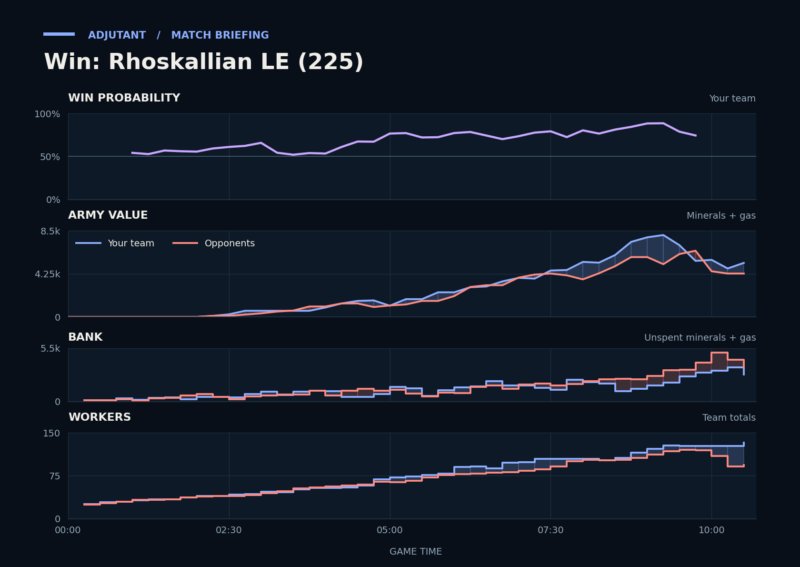

Win: Rhoskallian LE (225)
Provisional debrief. The full report (timeline, insights and analysis) is being generated.

**Win.** The duo came out of the fight at TooShart's third with more workers and a bigger army than the opponents, after killing 29 enemy workers there.
**Why**
- 9:05–10:17: Both lost armies; the duo killed 29 enemy workers and led in workers and army at the first gg.